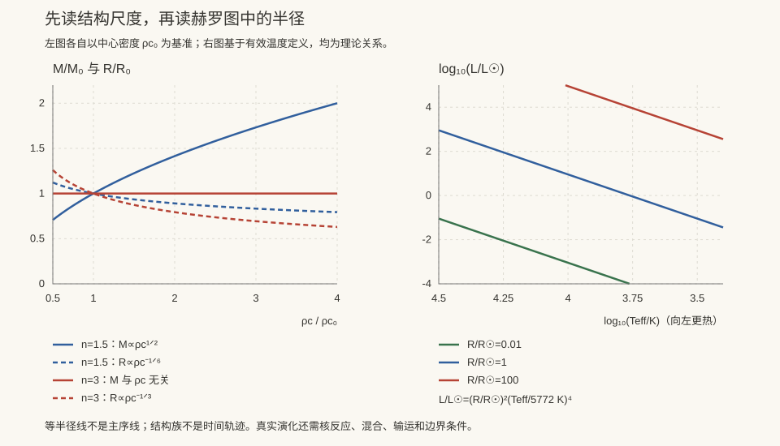

本页目录
天体 II · 恒星结构与演化
对标：Kippenhahn & Weigert《Stellar Structure and Evolution》/ Prialnik / Clayton ｜ 前置：ap-01、sm-01（热力学）、fl-04（对流） 恒星是引力与压强的百万年僵持。给定对称性、边界、物态、组成与输运闭合后，四个结构方程可以构造一个模型；把这句话推广成“唯一确定真实恒星”通常被称为 Vogt–Russell 关系或猜想，而不是严格定理。本页先把结构账本立稳，再说明哪些主序与演化结论需要额外物理。
学习层：一层层的壳，怎样把恒星撑住？
1. 具身情境：把恒星切成同心薄壳
想象把一颗静止、球对称的恒星切成许多同心薄壳。半径 \(r\) 内的质量 \(m(r)\) 向内拉；外侧壳层的压力差向外顶。平衡不是“压力很大”一句话，而是每一层都满足
下面的玩具把物态固定为多方关系 \(P=K\rho^{1+1/n}\)，用 Lane–Emden 的无量纲函数 \(\theta(\xi)\) 逐步积分；它让中心、表面、质量、半径和维里账本都能被追踪。
2. 先预测：表面和维里哪两行应该对账？
先不打开实验台，预测：
- 从中心向外走到第一零点时，\(\theta\)、\(\rho\) 和 \(P\) 哪一个先被强行设为零？
- 若外部表面压力取 \(P(R)=0\)，静力平衡的积分账本是否满足 \(3\int P\,dV+\Omega\approx0\)？
- 把中心密度从 \(1\) 调到 \(4\) 会不会改变同一个 \(n\) 的无量纲零点 \(\xi_1\)？
3. 形式桥：Lane–Emden 到 M、R 与维里
令 \(r=a\xi\)、\(\rho=\rho_c\theta^n\)、\(P=P_c\theta^{n+1}\)，则
本实验从正则中心展开式起步，找到第一个零点 \(\xi_1\)，并取
对 \(n<5\) 的这个零外压多方球，实验还计算 \(\Omega=-\frac{3}{5-n}\frac{GM^2}{R}\) 与 \(3\int P\,dV\)，把静力方程的积分结果翻译成维里残差。\(n\)、\(K\) 和 \(\rho_c\) 是模型输入，不是观测到的“恒星演化按钮”。
无 JavaScript 时的静态读法（示范单位 \(K=G=\rho_c=1\)）：
| 多方模型 | \(\xi_1\) | \(R\) | \(M\) | \(P(R)\) | \(3\int P\,dV+\Omega\) |
|---|---|---|---|---|---|
| \(n=1.5\) | \(3.65376\) | \(1.62969\) | \(3.02640\) | \(0\) | \(-4.1\times10^{-5}\) |
| \(n=3\) | \(6.89685\) | \(3.89113\) | \(4.55468\) | \(0\) | \(-1.8\times10^{-5}\) |
中心条件是 \(m(0)=0,\theta(0)=1,\theta'(0)=0\)；表面条件是第一零点 \(\theta(\xi_1)=0\)，因此这里的外压为零。有限步长带来表中小残差；它不是新的物理常数。
4. 误区 / 边界：这个玩具没有偷偷包含什么？
- 假设是模型的一部分：这里是 Newtonian、静态、球对称、无旋转无磁场的 hydrostatic toy；EOS 是固定多方关系。
- opacity 与 energy transport 缺席：没有 \(\kappa\)、辐射/对流温度梯度、核能率 \(\epsilon\) 或 \(dL/dr\)，所以实验不能预测光度、主序寿命或演化路径。
- 维里项有边界条件：若表面压力不为零，积分维里关系会带表面项；本页的 \(3\int P\,dV+\Omega\approx0\) 依赖 \(P(R)=0\)。
- 多方曲线不是恒星族谱：改变 \(n\)、\(K\) 或 \(\rho_c\) 得到的是一族 toy 结构；不能把它们当成普遍的质量–光度律或真实恒星演化序列。
- 数值账本不是定理证明：RK4 与有限步长检验这个具体模型；结构方程的一般存在性、稳定性和演化还需额外分析。
大质量恒星的核心坍缩超新星也不能只按初始质量贴标签：氢包层仍在时观测上归入 II 型；氢包层被风或伴星剥掉、氦层仍在时归入 Ib；氢和氦都被剥掉时归入 Ic。剥离程度取决于质量损失、金属丰度和双星相互作用，因此 II/Ib/Ic 是包层与谱线边界，不是一个只由 \(M_{\rm ZAMS}\) 决定的硬质量阈值。
5. 回到正式语言
完整恒星结构还需把静力平衡、质量守恒、能量守恒和能量输运与 \(P(\rho,T)\)、\(\kappa(\rho,T)\)、\(\epsilon(\rho,T)\) 及组成演化耦合。这个 lab 只把第一层 hydrostatic/EOS 账本透明化，因此它适合检查边界和量纲，不适合替代恒星演化计算。
6. 迁移题
若把表面压力改成非零的 \(P_s\)，试从静力方程积分推断维里账本会多出哪一项。再说明为什么同一个无量纲 \(n\) 的剖面，在改变 \(K\) 或 \(\rho_c\) 后可以改变 \(M\)、\(R\) 和 \(P_c\)，却不自动得到一条真实主序演化轨迹。

1. 四个结构方程
配以物态 \(P(\rho,T)\)、不透明度 \(\kappa\)（ap-01）、产能率 \(\epsilon\)（ap-03）和中心/表面边界条件。上面的 Lane–Emden 实验只保留静力方程与多方 EOS；它没有把 \(\kappa\)、\(\epsilon\) 或温度输运算进去。
Schwarzschild 判据：当辐射梯度陡于绝热梯度时对流启动——这是 fl-04 的对流失稳在恒星内部的形态。太阳外层 30% 是对流区（其表面米粒组织正是对流胞，🔗 fl-04）。
2. 维里定理：恒星的核心逻辑
对引力束缚系统，\(2\langle E_k\rangle + \langle E_g\rangle = 0\)，故
推论极其重要：恒星辐射掉能量后会收缩，而收缩使内部变热——
这一条支配了恒星的一生：
- 原恒星靠收缩升温，直至点燃氢（Kelvin–Helmholtz 时标）；
- 每种燃料耗尽后核心收缩升温，点燃下一种更重的燃料；
- 它也解释了恒星为何稳定：产能率过高 → 膨胀 → 降温 → 产能率下降（自调节负反馈，🔗 自动化站的语言）。
而简并核心失去这个负反馈——这正是氦闪与 Ia 型超新星的成因（ap-04）。
3. 主序与质光关系
标度分析【推导骨架】：在理想气体、给定组成、特定不透明度与稳定输运等额外假设下，由静力平衡 \(P\sim GM^2/R^4\)、理想气体 \(P\sim\rho T\) 得 \(T\propto M/R\)；代入辐射输运（Kramers 不透明度）可得一个常见的近似
观测符合 \(L\propto M^{3.5}\) 量级，但指数随质量、组成、输运机制和样本选择变化；它不是 Lane–Emden toy 的输出，也不是脱离条件的恒星演化定律。
寿命的惊人后果：
- 太阳（1 \(M_\odot\)）：约 100 亿年；
- 10 \(M_\odot\)：约 3000 万年；
- 0.5 \(M_\odot\)：远超宇宙年龄。
大质量恒星虽然燃料多，却挥霍得更快——宇宙中至今没有一颗小质量恒星死于自然衰老。
主序的上下限：
- 下限约 0.08 \(M_\odot\)：更低则核心温度点不着氢 → 褐矮星；
- 上限约 100+ \(M_\odot\)：辐射压超过引力（Eddington 极限，ap-05）→ 剧烈星风与不稳定。
4. 演化：离开主序之后
中低质量（\(\lesssim8M_\odot\)）： 氢耗尽 → 核心收缩、壳层氢燃烧 → 外层膨胀变冷 → 红巨星 → 氦核简并 → 氦闪（简并态无负反馈，热失控点火）→ 水平支氦燃烧 → 渐近巨星支（双壳层燃烧、热脉冲、s 过程，ap-03）→ 抛射外层成行星状星云 → 留下 白矮星（ap-04）。
大质量（\(\gtrsim8M_\odot\)）： 依次燃烧 H→He→C→Ne→O→Si，形成洋葱结构；硅燃烧只持续约一天（因中微子冷却极强）→ 铁核无法产能（ap-03）→ 核心坍缩。若氢包层保留，谱线归入 II 型；若氢被剥离但氦保留，归入 Ib 型；若氢、氦都被剥离，归入 Ic 型。这些 II/Ib/Ic 边界由包层和双星/恒星风剥离决定，不能把 \(8M_\odot\) 当成三类之间的唯一质量分界；坍缩遗迹仍可能是中子星或黑洞。
燃烧阶段的时标压缩是惊人的：氢燃烧数百万年、氦数十万年、碳数百年、硅约一天。恒星的一生中，最后 0.0001% 的时间决定了它留给宇宙的遗产。
5. 观测检验：星团
同一星团的恒星同时诞生、成分相同、距离相同，只有质量不同——天然的对照实验。
主序拐点（turn-off）给出年龄：质量越大越早离开主序，拐点位置随时间沿主序下移。球状星团的拐点年龄约 120–130 亿年，这曾是宇宙年龄下限的独立证据（与 cosmo-01 的 \(H_0\) 独立互证）。
6. 练习与要点
例 1（太阳中心温度估算） 由静力平衡量级估计 \(T_c\sim\dfrac{GM m_p}{k_B R}\sim10^7\) K——与详细模型给出的约 1.5×10⁷ K 同量级，一个量纲分析就抓住了核心。
例 2（为什么恒星不爆炸也不塌缩） 理想气体 + 负热容构成稳定的负反馈；一旦核心简并（压强不依赖温度），负反馈失效 → 氦闪、碳爆轰。"物态方程决定稳定性"是本页最深的一条。
例 3（日震学） 太阳表面的振荡模式（p 模）如同地震波，可反演内部声速剖面——这使恒星内部成为可观测的，并曾精确验证了标准太阳模型（顺带把太阳中微子问题的责任推给了中微子振荡而非模型，atom-01）。\(\blacksquare\)
下一页：恒星靠什么发光？答案把量子隧穿、核物理与宇宙元素丰度连成一条链。